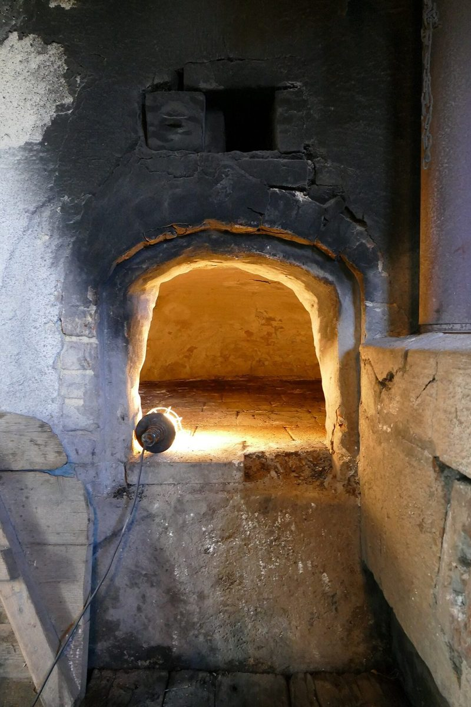

02Ab
店のこと
店のこと
お店について確認できているのは、所在地とInstagramのアカウントだけです。
このページの「想像してみる」部分は、制作側が想像して書いたものです。お店の実際の様子・考え・メニューとは関係がありません。
確認できていること
- 店名は「パン屋りあん」、業種はベーカリー
- 所在地は長野県佐久市原137-1
- Instagramのアカウント名は lien_boulangerie
- 電話番号はなし。連絡はInstagramから
- 営業時間・定休日・メニュー・価格・ご予約・駐車場は準備中

想像してみる
三つの音をタイルにすると
由来は分かりません。制作側は、「り」「あ」「ん」を三枚のタイルにして、そこに麦、窯、パンの切り口の写真を一枚ずつ添えてみました。実際のお店の姿ではなく、制作側の遊びです。